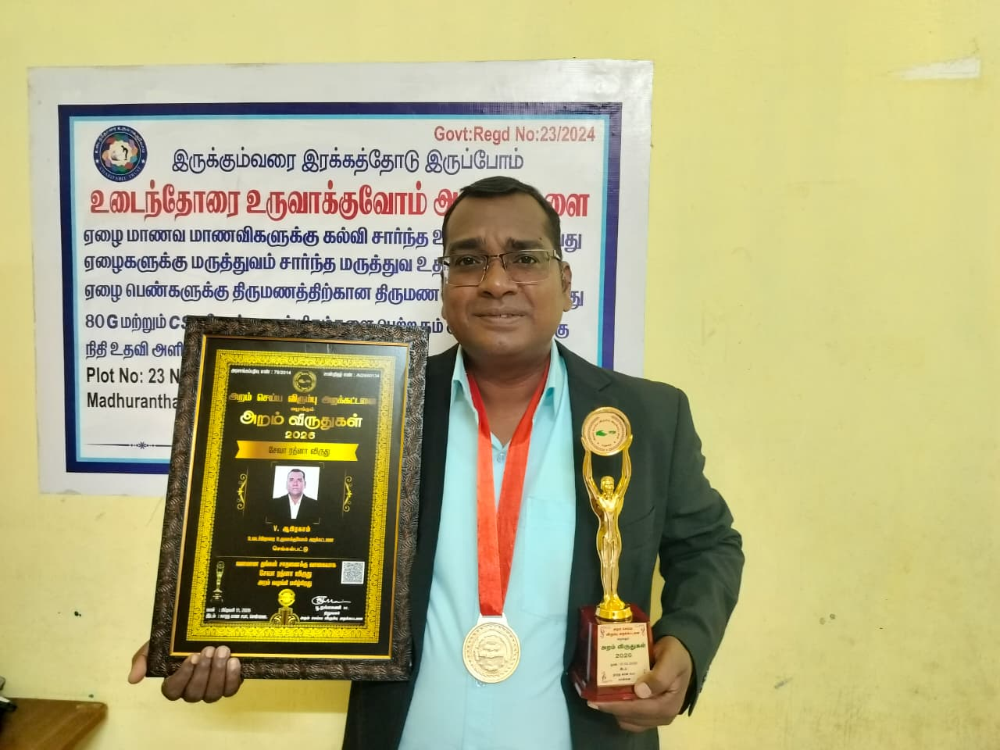

Our vision
Guaranteed access to quality support.
Creating a world where every individual has access to qualitative healthcare, education, and social mobility options that are practical, dignified, and locally reachable.
About & founder profile
The trust combines direct relief with repeatable models for healthcare access, student support, and sustainable livelihood development.
Our vision
Creating a world where every individual has access to qualitative healthcare, education, and social mobility options that are practical, dignified, and locally reachable.
Our mission
Building active community partnership models that provide real-world healthcare resources, robust educational frameworks, and sustainable livelihood support.

Founder & director
Abraham V is a social entrepreneur driving local, community-led initiatives. His work centers on mobilizing practical resources, building trusted partnerships, and shaping programs that respond to the needs of families in underserved communities.
His leadership focuses on healthcare access, education support, welfare programs, and transparent public service documentation.
Official trust identity
The official trust logo is displayed here for brand identity. Legal certificates are available on the Transparency page.
Interactive bio presentation
The uploaded presentation is embedded for browser viewing only.
Presentation file